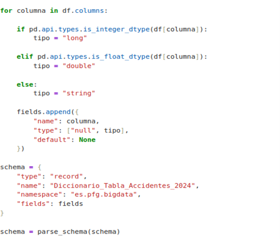
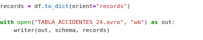

Introducción al ejercicio
El objetivo de este ejercicio es comprender el funcionamiento del formato Apache Avro mediante la conversión del conjunto de datos TABLA_ACCIDENTES_24.csv a un formato binario Avro.
Esta transformación permite al estudiante conocer los beneficios que proporciona Avro cuando se utiliza para almacenar e intercambiar grandes cantidades de información dentro del ecosistema Hadoop.
El ejercicio se desarrolla utilizando Python, pandas y fastavro, permitiendo observar de forma práctica el proceso completo de preparación, serialización y posterior comprobación de los datos.
Objetivo del ejercicio
El propósito principal es transformar un fichero de datos en formato CSV en un fichero binario Avro, manteniendo la estructura y la información contenida en el conjunto de datos original.
- Comprender el concepto de serialización.
- Diseñar un esquema Avro mediante JSON.
- Cargar y preparar los datos utilizando pandas.
- Serializar los registros utilizando fastavro.
- Generar el fichero TABLA_ACCIDENTES_24.avro.
- Comprobar que los datos originales se conservan correctamente.
- Comparar las características del fichero CSV y del fichero Avro.
1. Preparación del fichero CSV
El punto de partida del ejercicio es el conjunto de datos TABLA_ACCIDENTES_24.csv, correspondiente a los datos utilizados en las prácticas del proyecto.
El fichero CSV contiene los registros que serán posteriormente transformados al formato binario Avro.
TABLA_ACCIDENTES_24.csv
2. Diseño del esquema Avro
Antes de realizar la transformación es necesario definir el Schema de Avro. El esquema se expresa mediante una estructura JSON que determina cómo se representarán los datos dentro del fichero Avro.
El esquema especifica los nombres de los atributos, los tipos de datos asociados y las restricciones necesarias para realizar una serialización correcta de la información.

Figura.
Conversión del fichero
TABLA_ACCIDENTES_24.csv
a formato Avro.
Fuente: elaboración propia.
3. Carga de los datos mediante pandas
Una vez definido el esquema, el fichero CSV se carga mediante la biblioteca pandas. Esta biblioteca permite trabajar con los registros del conjunto de datos y realizar las operaciones necesarias antes de llevar a cabo la serialización.
import pandas as pd
df = pd.read_csv("TABLA_ACCIDENTES_24.csv")
De esta forma, los datos quedan disponibles en memoria para su posterior preparación y conversión al formato Avro.
4. Serialización mediante fastavro
Una vez preparados los registros, se utiliza la biblioteca fastavro para realizar la serialización de los datos conforme al esquema definido previamente.
El proceso transforma los registros originalmente almacenados en formato CSV en una representación binaria compatible con Apache Avro.
from fastavro import writer
from fastavro import parse_schema
5. Generación del fichero Avro
Como resultado del proceso de serialización se genera el fichero binario:
Este fichero contiene los registros del conjunto de datos original utilizando la estructura definida mediante el esquema Avro.
El formato binario permite representar los datos de una manera adecuada para su almacenamiento y transmisión dentro de infraestructuras de procesamiento distribuido.
6. Comprobación del resultado
Una vez generado el fichero Avro, se comprueba que la transformación se ha realizado correctamente. Para ello, se analizan los registros contenidos en el nuevo fichero y se comparan con los datos originales.
Esta comprobación permite verificar que los atributos y registros del conjunto de datos se han conservado durante el proceso de serialización.
7. Análisis de los formatos
Finalmente, se analizan las diferencias entre el fichero CSV original y el fichero Avro generado.
| Característica | CSV | Avro |
|---|---|---|
| Representación | Texto plano | Binaria |
| Esquema | No definido formalmente | Definido mediante Schema |
| Tamaño | Generalmente mayor | Puede ser más compacto |
| Uso en Big Data | Sencillo pero menos optimizado | Diseñado para serialización y procesamiento |
Resultado final del ejercicio
El ejercicio permite completar el proceso de transformación desde un fichero CSV hasta un fichero binario Avro, pasando por la definición del esquema, la preparación de los datos y la serialización.
El resultado final consiste en el fichero TABLA_ACCIDENTES_24.avro y en la comprobación de su contenido, verificando que la información original se mantiene correctamente tras el proceso de serialización.
Conversión a Avro
Una vez definido el esquema Avro y preparados los datos contenidos en el fichero TABLA_ACCIDENTES_24.csv, se procede a realizar la conversión del conjunto de datos al formato binario Apache Avro.
Para llevar a cabo esta transformación se utiliza la biblioteca fastavro, que permite serializar los registros del fichero CSV utilizando el esquema previamente definido. De esta forma, cada registro queda almacenado siguiendo la estructura establecida en el esquema Avro.

Figura 41.
Conversión del fichero TABLA_ACCIDENTES_24.csv al formato
Avro.
Fuente: elaboración propia.
Proceso de conversión
El proceso comienza con la lectura del fichero CSV mediante pandas. Posteriormente, los registros son preparados para adaptarlos a los tipos de datos definidos en el esquema Avro.
Finalmente, mediante la biblioteca fastavro, se serializan los registros y se genera el fichero de salida con extensión .avro.
El resultado obtenido permite disponer de una representación binaria estructurada de los datos, preparada para su utilización posterior dentro del ecosistema Hadoop.